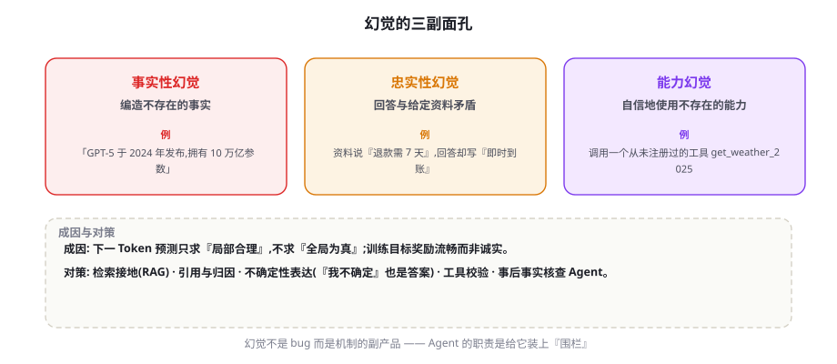
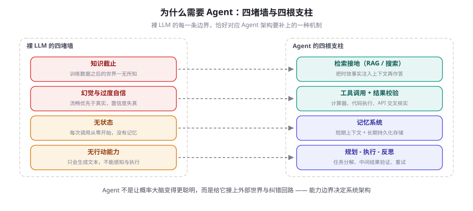

LLM 的能力边界：幻觉、知识与推理局限
用好 LLM 的前提是知道它在哪里不可靠。本章建立一张能力边界地图：幻觉如何分类、为何发生，模型是否「知道自己不知道」，知识截止意味着什么，推理在哪类问题上系统性失败——并由此回答一个根本问题：为什么构建可靠的系统需要 Agent 架构。
先画地图：四类边界
先给结论：LLM 是对训练语料的概率式压缩，不是数据库、不是计算器、也不是行动者。第 4 章讲过，它唯一的训练目标是「下一个 Token 的似然」，能力是这个目标的副产品——这决定了它天然带着四类边界：知识边界（只知道训练数据覆盖的、截止日期之前的世界）；事实性边界（会以流畅的口吻编造细节，即幻觉）；推理边界（多步组合推理会系统性失败，而非随机失误）；行动边界（没有感知、没有执行、没有状态，只能生成文本）。
这四类边界不是「缺陷清单」，而是系统设计的决策依据。拿到任何一个新需求，都值得过一遍三连问：这个任务踩中哪类边界（要模型回忆事实？做多步推理？还是纯文本变换）？失败一次的代价多大（聊天里错一句无妨，付款指令错一分钱是事故）？用什么机制对冲（检索、工具、校验、人工）？问完这三问，「直接调 API 还是搭 Agent」通常不言自明。
还有一个必须先戳破的幻想：提示词写得好可以减轻幻觉，但无法根除它。「请只根据事实回答」「不确定就说不知道」这类指令能改变模型的表达倾向，改变不了概率机制本身——下一节会看到，理论工作证明校准的模型在生成式使用下必然存在幻觉率下界。这解释了一个常见的失望循环：团队在提示词上打磨两周，幻觉率下降一些后稳住，再怎么改措辞都下不去——因为剩下的部分根本不在提示词的管辖范围里。

幻觉的分类与成因
幻觉（Hallucination）指模型生成看似合理却错误或无据的内容。学术界最常用的分类来自综述文献的两分法：事实性幻觉（Factuality Hallucination）——输出与客观世界矛盾，如编造不存在的论文、错误的日期；忠实性幻觉（Faithfulness Hallucination）——输出与给定的上下文矛盾，如资料写「退款需 7 天」，回答却说「即时到账」。工程视角还应加上第三种：能力幻觉——自信地引用不存在的工具、API 或函数名，这在 Agent 场景里造成的后果最直接。
| 类型 | 含义 | 典型例子 | 高发场景 | 首要对策 |
|---|---|---|---|---|
| 事实性幻觉 | 与客观世界矛盾 | 编造论文、事件日期、人物头衔 | 开放问答、长尾冷门实体 | 检索接地 + 引用归因 |
| 忠实性幻觉 | 与给定资料矛盾 | 摘要时添加原文没有的细节 | 长文档摘要、RAG 作答 | 约束作答范围 + 事后核对 |
| 能力幻觉 | 引用不存在的工具/接口 | 调用从未注册的 get_weather_2025 | 工具繁多、Schema 相近时 | 工具白名单 + 调用前校验 |
问题：生成模型的「一本正经胡说八道」如何系统刻画？方法：对幻觉研究做全景综述，建立「内在/外在」与「事实性/忠实性」的分类体系，梳理成因（数据、模型、解码）与缓解手段。结果与地位：至今仍是幻觉研究被引最多的坐标系，本章分类即源于此。
为什么会这样？四个成因可以还原到机制上。其一，训练目标只求局部合理：下一 Token 预测奖励「像语料」，不奖励「为真」——流畅与真实的优化方向并不重合。其二，参数记忆是统计而非索引：知识以分布式权重存储在 FFN 中，冷门实体的「记忆」会被高频模式污染，模型把常见搭配套到罕见实体上。其三，错误会滚雪球：模型对自己先前输出的幻觉内容会继续「引以为据」，错误率随生成长度上升（Zhang et al., 2023）——这与人类精心维护谎言的困难不同，模型几乎没有内部「愧疚」信号。其四，也是最重要的一条：幻觉可能有理论下界。
问题：幻觉能否通过更好的训练被彻底消除？方法：以校准（模型给出的概率与真实频率一致）为前提做理论分析。结果：在校准前提下，生成式使用的幻觉率存在与训练集单点错误率相关的下界——只要语料里存在只出现过一次的事实，模型就必然以一定概率说错。启示：幻觉不是工程失误，而是「概率式建模 + 生成式使用」的内生产物，必须靠架构（检索、校验）而非「更好的模型」单独解决。
忠实性幻觉在 RAG 场景里值得多说一句，因为它是线上最常见的形态。机理是「闭卷回退」：当上下文很长、相关证据只占一小段、或者检索来的段落彼此矛盾时，模型的注意力没有稳稳落在证据上，回答会悄悄滑回参数记忆——用训练语料里的旧版本信息「补全」眼前的资料。工程信号有三：回答里的具体数字与日期是否都能在资料里找到出处、专有名词是否与原文拼写一致、限定词（「所有」「从不」「2024 年起」）是否被资料支持。三类信号都可自动化抽查，也是引用归因系统的检查对象。
这条理论结果把「零幻觉」从目标清单上划掉了，取而代之的问题是：幻觉率能不能被测量和控制？这就轮到校准出场。
校准：模型「知道自己不知道」吗
校准（Calibration）指模型的置信度与实际准确率的一致程度：它声称 80% 把握的回答里，应该真有约八成是对的。度量上有现成工具——把预测按置信度分桶、对比每桶的实际正确率画成可靠性图，偏差的加权平均就是期望校准误差（ECE），数值越低越可信。对选择题式任务，大模型表现出相当不错的内部自我认知——Anthropic 的研究显示，模型对自己「哪些问题会答对」有可用作校准信号的内部状态（Kadavath et al., 2022，"Language Models (Mostly) Know What They Know"）。
但工程上必须知道两个反例。长文本生成会过度自信——模型逐句生成时几乎从不停下来表示不确定，生成式使用的校准显著差于判别式任务。口头置信度不可靠——直接问模型「你有多大把握」，得到的数字与真实准确率关联很弱，模型倾向于报一个听起来体面的数（如「我有 90% 的信心」），不能作为置信度来源。连 logprobs 里的 Token 概率也要小心解读：它衡量的是「这个说法在语料意义上多常见」，而语料常见与事实正确是两回事——流言往往比冷门真相「更常见」。
可靠的信号要靠系统性测量制造出来。四种实用手段的适用面各不相同：
| 手段 | 原理 | 成本 | 适用场景 |
|---|---|---|---|
| 采样一致性 | 多次采样看答案分布的集中度 | n 倍调用成本 | 有标准答案的任务、关键决策前置检查 |
| 语义熵 | 按「含义」聚类采样结果再算熵 | n 倍 + 聚类 | 开放式生成的事实性风险检测 |
| 自我核验 | 让模型无参照地复查自己的答案 | 约 2 倍 | 长文本分段核查（SelfCheckGPT 思路） |
| 口头置信度 / Token 概率 | 直接读取模型自报或概率 | 近零 | 仅作粗筛，不可单独依赖 |
from collections import Counter
def consistency_score(client, question: str, n: int = 5):
"""同一问题采样 n 次，用答案一致性近似『模型有没有把握』"""
answers = []
for _ in range(n):
resp = client.chat.completions.create(
model="gpt-4o-mini",
messages=[{"role": "user", "content": question}],
temperature=0.8) # 有意调高：让分布的多样性显形
answers.append(resp.choices[0].message.content.strip())
top, cnt = Counter(answers).most_common(1)[0]
return top, cnt / n # 多数答案 + 一致率
# 一致率高 → 大概率稳定正确；一致率低 → 模型在『猜』，
# 高价值动作前应触发检索复核或转人工（成本 ≈ n 倍，只用于关键决策）同一事实可以有一百种措辞，而两种措辞几乎相同也可能对应两个不同的人名。Farquhar et al.（2024, Nature）的做法是：对同一问题采样多个回答，用语义相似度把回答按「含义」聚类，再对簇的分布计算熵——含义层面的熵高，说明模型对「该说什么」本身没有定见，这正是编造（confabulation）的信号。论文在多个模型与数据集上验证了它与幻觉的显著相关性，是「从概率里读出不确定性」的代表作。
工程策略由此成形：低风险场景直接用；中风险场景加采样一致性或语义熵打分，低置信度触发检索；高风险场景（金额、医疗、法律）无论如何都要求可验证来源。这套分级与拒绝回答的设计，在第 63 章的幻觉治理框架里有完整展开。
还要为「拒绝回答」正名。校准的终极用途不是给每个答案贴分数，而是让模型学会说「我不知道」——一个会拒答的系统，错误率远低于一个永远滔滔不绝的系统，哪怕后者的「平均能力」更强。工程上的做法是把拒答变成明确的产品行为：置信度低于阈值时输出「我无法确认，建议查询 XX」，并把拒答率纳入监控——拒答率突然升高往往意味着检索质量或提示词出了新问题。对「回答率」有硬指标的团队，正确的做法是优化检索与验证链路把置信度做上去，而不是调低阈值硬答。
知识截止与参数记忆的失真
每个模型都有知识截止日期（Knowledge Cutoff）：训练语料的采集时点。之后的发布会、新法律、新版本号，模型要么一无所知，要么用旧世界的模式去「猜」。比「不知道」更危险的是三种参数记忆的失真：过时——把已被修订的事实当作仍成立（价格、政策、版本号是重灾区）；混淆——相似实体相互串线，把 A 公司的营收安到 B 公司头上；长尾虚构——对高频实体记忆较准，对冷门实体则用高频模式补全，编出的细节带真实感。一个直观实验：问一个冷门人物「他 2023 年做了什么」，部分模型会流畅地给出一个具体但不存在的项目名——长度、语气、格式全都对，唯独内容是编的。
一个反直觉的实证结果值得记住：用微调向模型灌输新知识，反而可能助长幻觉。Gekhman et al.（2024）把 SFT 数据按「模型是否本来就知道」分组后发现，「训练集中才知道（Unknown）」的示例会让模型学会在不确定时也硬答——微调教会的不是新知识，而是「不要再承认不知道」。这从数据层面解释了为什么「缺什么补什么」的朴素微调不可取。
知识更新的正确阶梯按成本从低到高排：第一级，提示内注入——把最新事实直接写进上下文，适合个人与原型，代价是手动维护；第二级，检索接地（RAG）——文档库向量化、按需检索注入，适合企业知识场景，代价是建库与检索工程；第三级，继续训练——持续预训练或微调，只适合「领域语言本身」的变化（新术语、新格式），永远不该用来追时效事实。绝大多数业务需求停在第二级就是最优解：检索把「参数里的模糊印象」换成「眼前的确切证据」，同时让引用归因成为可能（RAG 全流程见 第 20 章）。给模型的提示里附上当前日期，是第一级里最便宜也最常被忘掉的一行。
三类零成本的做法能消掉一大类过时错误：其一，系统提示里附「今天是 YYYY-MM-DD」；其二，问法里显式带时间（「截至 2026 年 3 月，XX 政策是什么」），逼模型把答案锚定到时段；其三，把所用模型的截止日期写进请求日志与监控面板——归因「模型说错」时，先分清是「不知道」还是「记错了」，两者的修法完全不同。
推理失败模式：组合爆炸与「假流畅」
幻觉之外，第二类系统性失败是多步推理。它的数学结构很不友好：一条推理链的总准确率近似等于各步准确率的乘积——每步 95% 的可靠性，10 步之后只剩约 60%，20 步之后约 36%。这不是「努力一点」能解决的，因为错误不随步数线性累积，而是指数级。它还带来一个隐蔽的运维现象：推理链越长，输出质量越不可复现——同样的任务今天成、明天败，团队会误以为是「模型不稳定」，实则是指数衰减下的正常波动。
两项研究把失败模式钉得很死。其一，Faith and Fate（Dziri et al., 2023, NeurIPS）用图连通性等可枚举任务证明：Transformer 在分布内的组合上表现出色，一旦问题需要训练分布中没见过的「子问题组合」，性能断崖式下跌——模型是在模式匹配，不是在执行通用推理算法；论文同时发现，Chain-of-Thought 只是把推理「写出来」，并不能让模型跳出分布限制。其二，GSM-Symbolic（Mirzadeh et al., 2024）把小学数学题中的数字换成等价符号再实例化，所有受测模型都出现明显下降；在题目里加一句与问题无关的干扰信息后，部分模型的成绩可下滑数十个百分点——说明所谓「数学能力」有相当成分是对题面模式的记忆。
对策与失败模式一一对应。逐链乘法→ 缩短链条：任务分解（第 18 章）把一条 20 步长链拆成若干短链，让每段可独立验证；单次采样不稳 → 冗余投票：自洽性（Self-Consistency，Wang et al., 2022）采样多条推理路径取多数答案，是推理时刻最便宜的可靠性红利（第 7 章已展开）；算术不可靠 → 外部工具：计算器与代码执行把「生成数字」变成「生成程序」，确定性引擎接管计算；过程不可见 → 过程监督：Let's Verify Step by Step（Lightman et al., 2023）证明逐步骤打分的奖励模型（PRM）比只看最终答案（ORM）更能提升数学推理的可靠性；模式匹配 → 推理模型：o1/R1 一类通过 RLVR 训练、用更长思考换正确率的模型（第 43 章）显著抬高了推理上限，但「分布外组合失败」的根基并未消失，工具与验证仍然是必要的外围。
长任务还要警惕级联失败：第 3 步的一个小错，会在第 10 步被当作既定事实继续引用，到第 20 步已经没有一句是对的——错误不但相乘，还会被下游「洗白」成流畅的叙述，让你看不出污染源头。这就是为什么小时级任务需要中间产物落盘与检查点（第 76 章）：每个检查点做一次「到目前为止对不对」的验证，把指数衰减切成若干可重启的短链；反思机制（第 22 章）提供的正是这种「回头看」的结构化方式。
设计评审时对每个推理环节问一句：这一步是「语义判断」还是「确定性计算」？日期相减、金额求和、单位换算、查表映射，全部该交给代码或工具——模型只负责「该算什么」。经验法则是：凡是能用一行 Python 算出来的东西，都不该让模型「心算」；推理链每剥离一个计算环节，长链可靠性的指数衰减就缓一分。
从边界到 Agent：四堵墙与四根支柱
把前几节的结论拼起来，论证就完整了。裸 LLM 有四堵墙——知识截止、幻觉与过度自信、无状态、无行动能力——而每堵墙恰好对应 Agent 架构的一根支柱：检索接地把时效事实与长尾事实从外部搬进上下文，直接攻击知识截止与事实性幻觉；工具调用 + 结果校验把算术、数据查询、行动执行交给确定性引擎，同时用校验器拦住值幻觉；记忆系统补上状态与连续性，让跨会话、跨天任务成为可能；规划-执行-反思循环用验证与重试对冲推理链的指数衰减。这四根支柱的详细机制分别在第 15 章（循环）、第 17 章（工具）、第 19 章（记忆）与第 20 章（RAG）展开；自主性该放到哪一级，第 14 章的光谱模型给出框架。

| 边界（墙） | 直接后果 | Agent 对策（支柱） | 详见 |
|---|---|---|---|
| 知识截止 | 过时、错版、不知新事 | 检索接地：RAG / 搜索工具 + 引用归因 | ch020 / ch063 |
| 幻觉与过度自信 | 流畅地编造事实与细节 | 工具校验、采样一致性打分、高价值动作人工复核 | ch017 / ch063 |
| 无状态 | 每次调用失忆，任务无连续性 | 记忆系统：上下文管理 + 长期存储 | ch019 / ch023 |
| 无行动能力 / 推理脆弱 | 只能说话；多步链条指数衰减 | 工具执行 + 规划分解 + 反思重试 | ch015 / ch018 / ch022 |
同样重要的是反面论证：不是所有任务都该 Agent 化。纯文本变换（翻译、润色、改写格式）不踩任何墙，一次调用足矣；一次能答对且错了也无妨的任务，加 Agent 只会平添延迟与故障点。Agent 的每一根支柱都有工程成本（延迟、Token 费用、组件故障率），它的正当性来自「边界的代价大于机制的成本」——用本开头的三连问逐项核算，别为了架构而架构。
最后给一张可以带走的设计评审清单，把本章压缩成四个问题，逐个环节问：这个环节在回忆还是推理（回忆 → 检索接地；推理 → 缩链 + 工具）；错了怎么发现（没有检测手段的错误等于没有防护，先补校验与评测再谈别的）；错了怎么止损（重试、降级还是转人工，写进流程而不是临场发挥）；置信度从哪来（口头置信度不算数，用采样一致性或可验证来源）。四个问题都有答案，这个环节才算设计完了——Agent 的工程本质，就是让这四个问题在任何环节都不落空。
检索会引入新噪声（无关段落）、工具会返回错误数据、摘要会丢细节——每根支柱在堵墙的同时也开了新窗。可靠系统依靠的是「边界认知 + 分层校验 + 评测护栏」的组合拳，而不是「上了 RAG/Agent 就安全了」。评测思维（第 13 章）与幻觉治理工程（ch063）是这套组合拳的另一半。
一句话收束本章：LLM 是一台概率机器，Agent 是围绕这台机器搭建的确定性外围。理解边界不是为了悲观，而是为了把每一分不确定性都交给恰当的机制去消化。下一章进入这些机制的技术地基——把文本变成向量、把语义变成距离的 Embedding（第 10 章）。
本章小结
- LLM 是概率式压缩器，天然带着四类边界：知识截止、事实性（幻觉）、推理（组合失败）、行动（无感知执行）；每个需求都值得过「哪类边界—失败代价—对冲机制」三连问。
- 提示词能减轻但无法根除幻觉；幻觉分事实性、忠实性、能力幻觉三类，成因是训练目标只求局部合理、参数记忆是统计而非索引、错误滚雪球，且校准模型理论上必然幻觉（Kalai & Vempala 下界）。
- RAG 场景最常见的是「闭卷回退」式忠实性幻觉；三类可自动化信号：数字日期有出处、专名与原文一致、限定词有资料支持。
- 模型对「知道自己不知道」有可用的内部信号，但口头置信度与 Token 概率都不可单独依赖；工程上用采样一致性、语义熵、自我核验制造可信的置信信号，置信度只决定「是否升级验证」。
- 时效与长尾事实不应依赖参数：微调灌输新知识反而助长硬答幻觉（Gekhman et al., 2024）；知识更新阶梯是提示注入 → RAG → 继续训练，业务需求绝大多数停在第二级。
- 多步推理总准确率近似各步相乘（每步 95%，20 步约 36%），且存在分布外组合失败；对策是任务分解、自洽性、外部工具、过程监督与推理模型，但根基问题未消失。
- 四堵墙对应四根支柱：检索接地、工具校验、记忆、规划-反思——Agent 是概率大脑 + 确定性外围；但每根支柱都有成本，纯文本变换类任务不该 Agent 化。
自测题
- 事实性幻觉与忠实性幻觉的区别是什么？为什么 RAG 场景要特别警惕后者？（提示：RAG 给了模型一份资料，也给了它「针对资料犯错」的机会；注意「闭卷回退」机理。）
- 为什么说「校准的语言模型必然幻觉」？这个结论对工程目标意味着什么？（提示：目标从「零幻觉」改成什么？）
- 为什么直接问模型「你有多大把握」不可靠？
logprobs的 Token 概率又为什么不能当事实置信度用？（提示：语料常见 ≠ 事实正确。） - 为什么「微调灌输新知识」可能加重幻觉？正确的知识更新阶梯怎么排？（提示：Gekhman et al. 的 Unknown 示例；提示注入 → RAG → 继续训练。）
- 一条推理链每步可靠性 95%，10 步与 20 步的期望总可靠性各是多少？由此推出两条工程对策。（提示：约 60% 与 36%；分解与工具化。）
- 给一个「不该 Agent 化」的任务举一个例子，并说明判断依据。（提示：不踩任何墙、失败代价低、单次调用可完成。）
参考文献与延伸阅读
- Ji, Z. et al. (2023). Survey of Hallucination in Natural Language Generation. ACM Computing Surveys. arXiv:2202.03629
- Huang, L. et al. (2023). A Survey on Hallucination in Large Language Models: Principles, Taxonomy, Challenges, and Open Questions. ACM TOIS. arXiv:2311.05232
- Kalai, A. & Vempala, S. (2024). Calibrated Language Models Must Hallucinate. STOC 2024. arXiv:2311.14648
- Farquhar, S. et al. (2024). Detecting Hallucinations in Large Language Models Using Semantic Entropy. Nature. arXiv:2302.09198
- Kadavath, S. et al. (2022). Language Models (Mostly) Know What They Know. arXiv:2207.05221
- Zhang, M. et al. (2023). How Language Model Hallucinations Can Snowball. ICML 2023. arXiv:2305.13534
- Gekhman, Z. et al. (2024). Does Fine-Tuning LLMs on New Knowledge Encourage Hallucinations?. EMNLP 2024. arXiv:2405.05904
- Dziri, N. et al. (2023). Faith and Fate: Limits of Transformers on Compositionality. NeurIPS 2023. arXiv:2305.18654
- Mirzadeh, I. et al. (2024). GSM-Symbolic: Understanding the Limitations of Mathematical Reasoning in Large Language Models. arXiv:2410.05229
- Wang, X. et al. (2022). Self-Consistency Improves Chain of Thought Reasoning in Language Models. arXiv:2203.11171
- Lightman, H. et al. (2023). Let's Verify Step by Step. arXiv:2305.20050